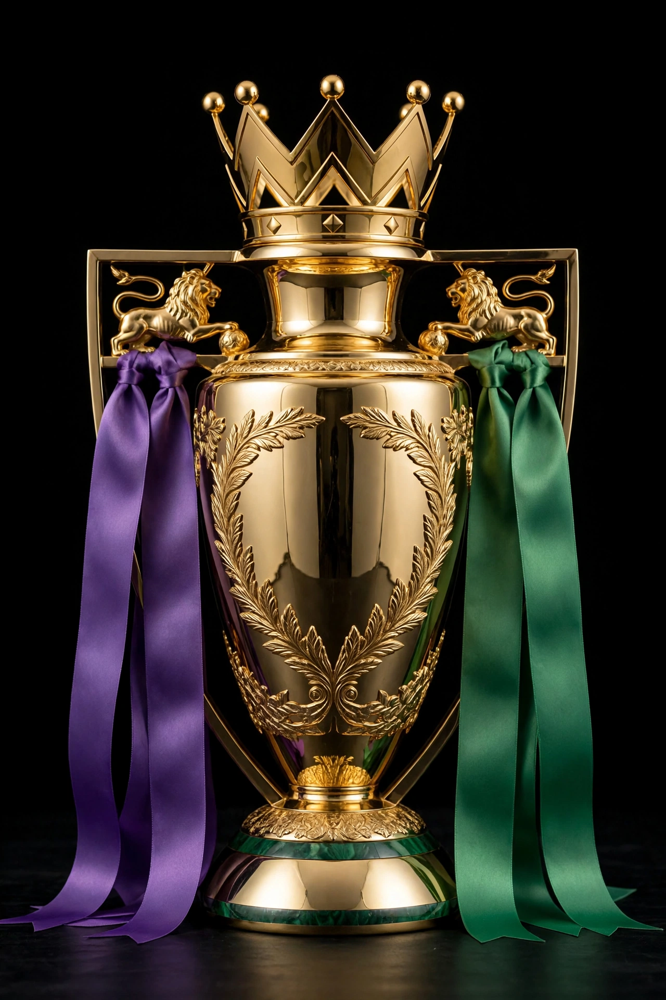

From Wikipedia, the free encyclopedia
| Premier League | |
|---|---|
 The Premier League trophy, a golden crown-topped cup with lion handles, draped in ribbons | |
| Founded | 20 February 1992 |
| Country | England (occasionally Welsh clubs) |
| Teams | 20 |
| Relegation to | EFL Championship |
| Current champions | Liverpool (2024–25) |
| Most championships | Manchester United (13) |
| Top goalscorer | Alan Shearer (260) |
The Premier League is a professional association football league in England and the highest level of the English football league system. Contested by 20 clubs, it operates on a system of promotion and relegation with the English Football League (EFL). Seasons typically run from August to May, with each team playing 38 matches: two against each other team, one home and one away. Most games are played on Saturday and Sunday afternoons.
The competition was founded as the FA Premier League on 20 February 1992, when clubs in the Football League First Division broke away from the Football League to take advantage of a lucrative television rights deal. It has since become the world's most-watched sports league and the most lucrative football league, broadcast in over 200 territories.
Manchester United, under Sir Alex Ferguson, dominated the early years, winning eight of the first eleven titles and 13 in total — still the record. Arsène Wenger's Arsenal went the entire 2003–04 season unbeaten (the "Invincibles"); Chelsea (backed by Roman Abramovich) and then Manchester City (under Pep Guardiola, who won four consecutive titles 2021–2024) reshaped the league's balance of power. Leicester City's title in 2015–16, at odds of 5000–1, is considered one of the greatest sporting upsets ever. Liverpool won the league in 2019–20 and again in 2024–25 under Arne Slot.
Alan Shearer is the league's record goalscorer with 260 goals for Blackburn Rovers and Newcastle United. Gareth Barry holds the appearances record (653). Erling Haaland set the single-season scoring record with 36 goals in 2022–23.
Categories: Premier League | Football leagues in England | Sports leagues established in 1992